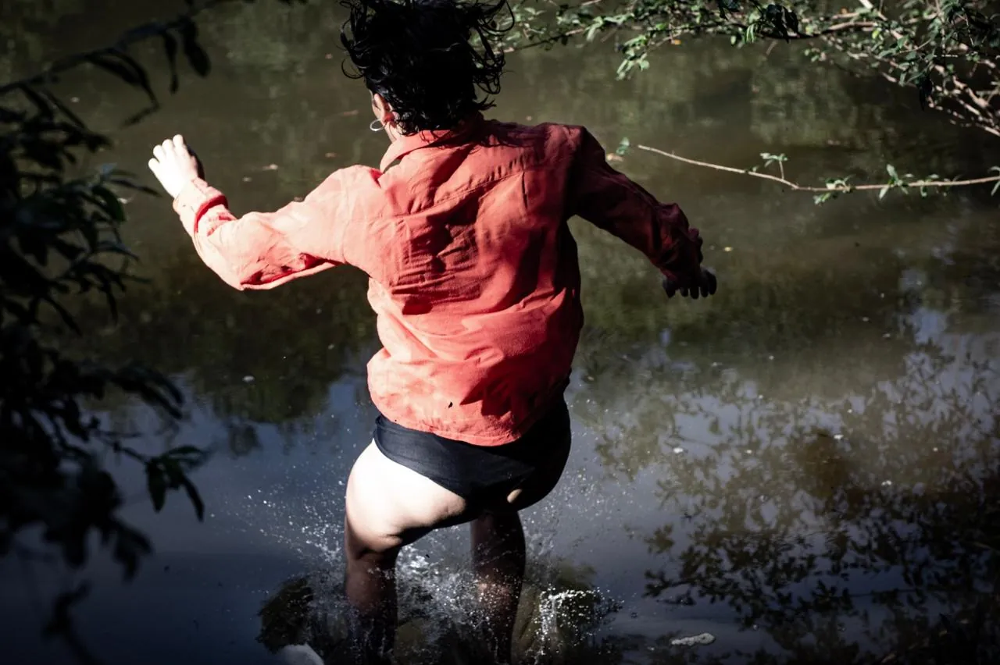
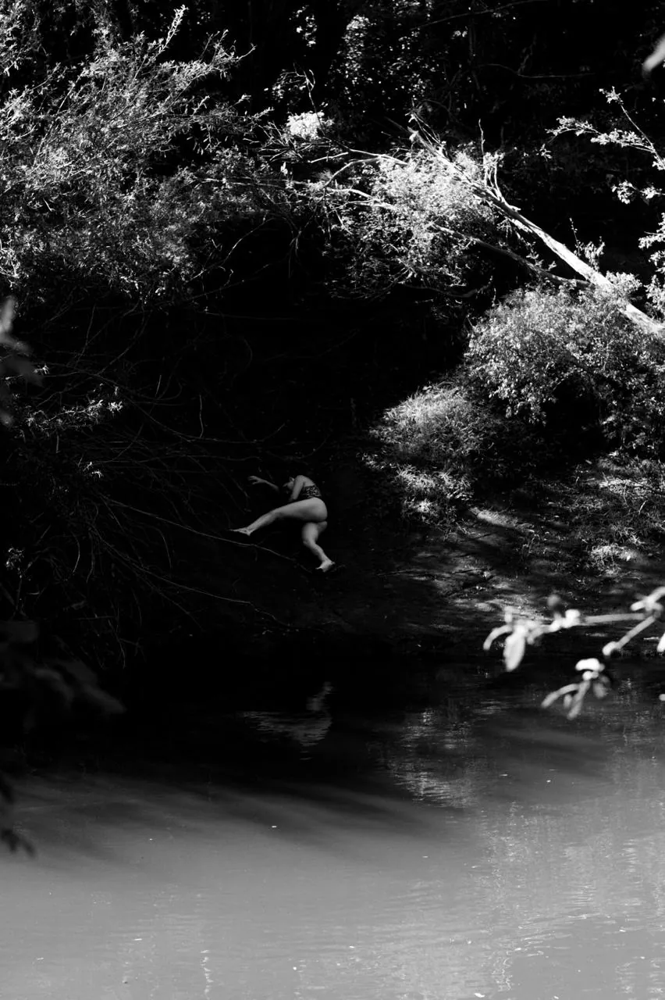
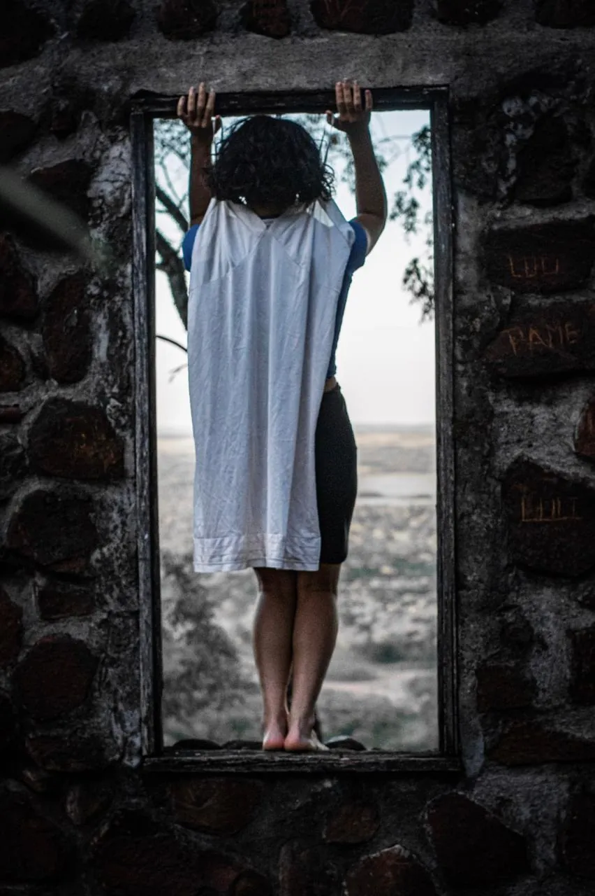
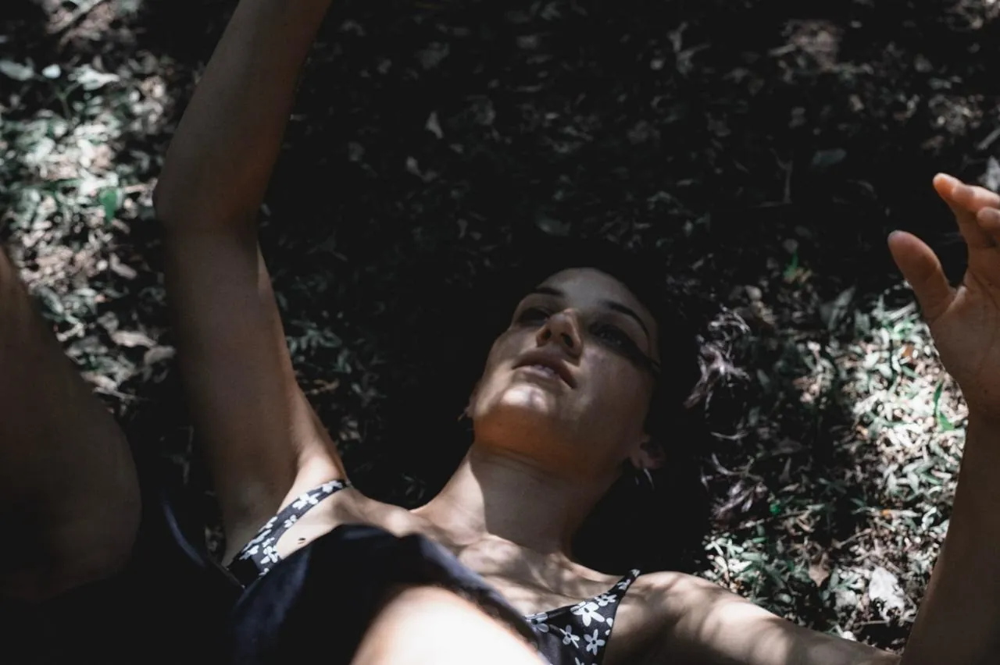
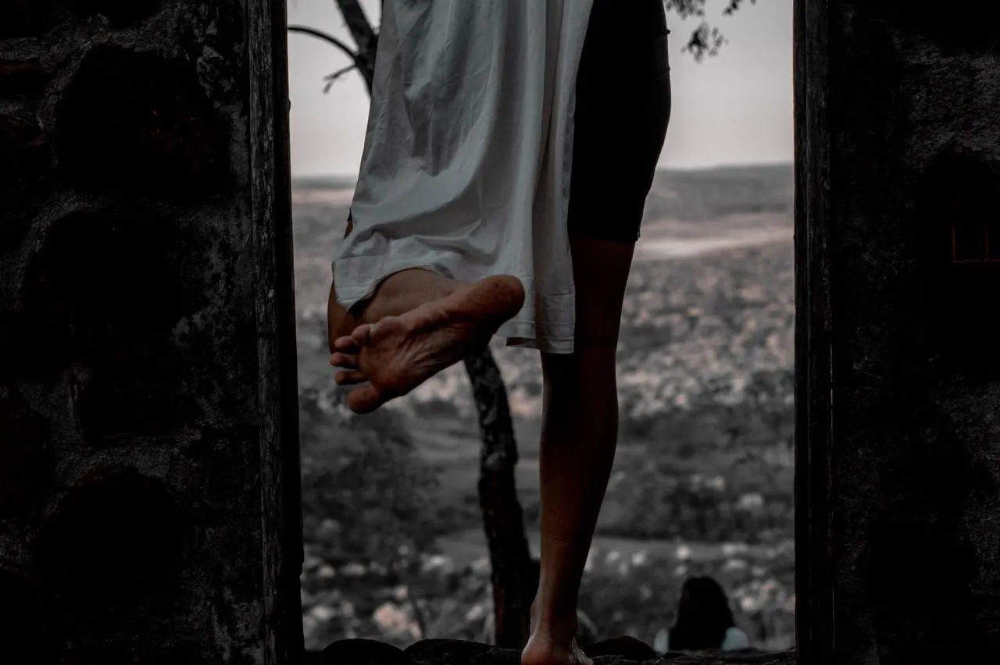
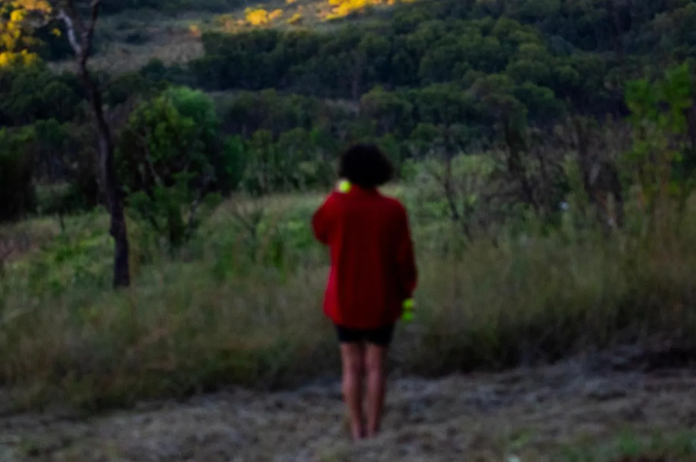
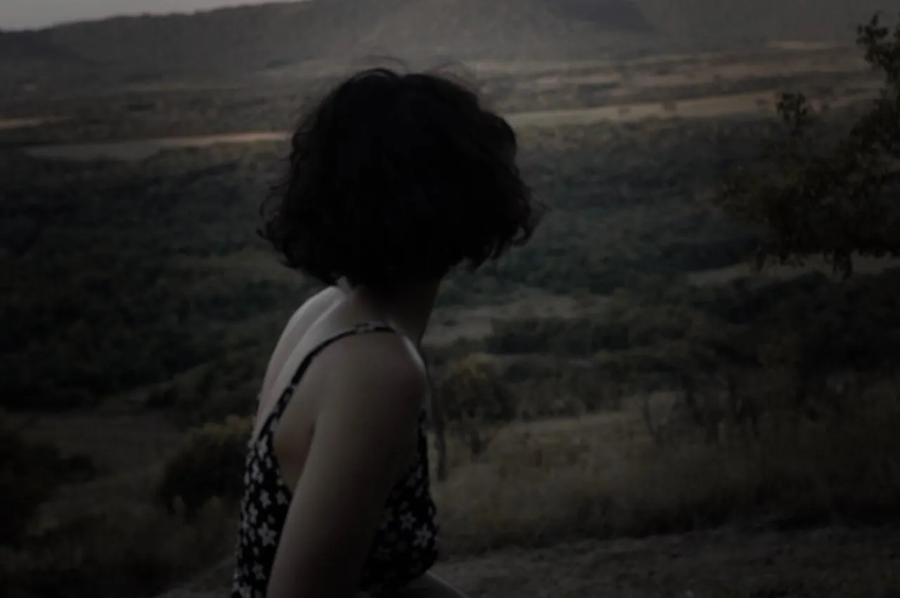
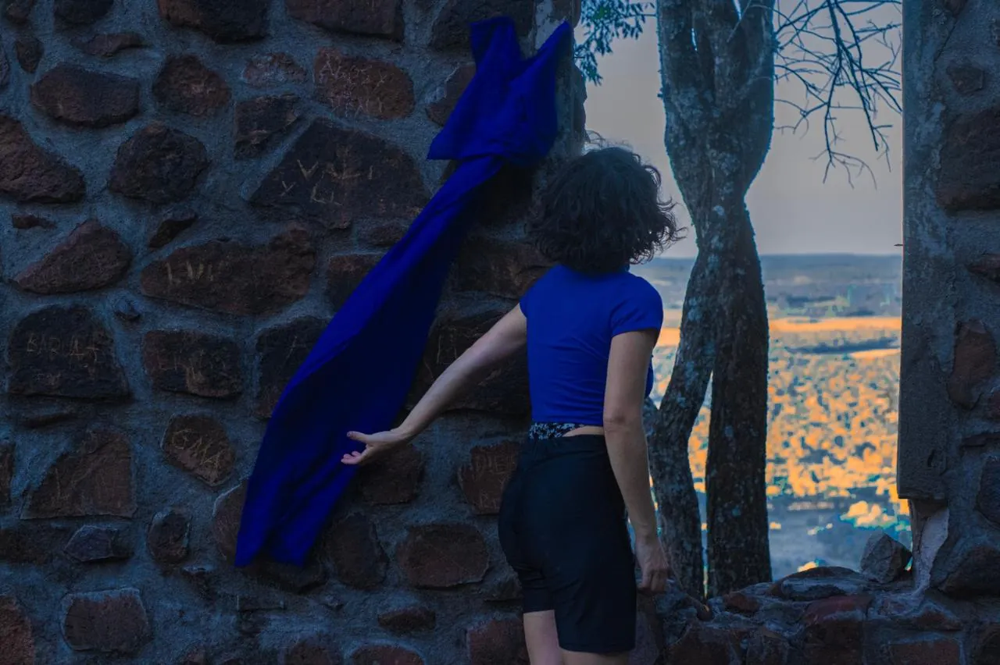

Julien en Profundidad
Julien en Profundidad es un ensayo fotográfico que explora el vínculo entre la música, el cuerpo y la intimidad del proceso creativo. Una búsqueda que intenta ir más allá del retrato convencional de un artista para detenerse en aquello que sucede cuando la música atraviesa a quien la interpreta.
Me interesa fotografiar lo que no siempre puede verse, la concentración, la vulnerabilidad, los silencios, los gestos mínimos, ese instante en el que el cuerpo parece abandonar su propia conciencia para convertirse en sonido.
La profundidad no es solamente una decisión estética, es también una manera de acercarme al otro, de observar sin invadir, de encontrar en la luz y en las sombras una forma de narrar lo que las palabras no alcanzan.
Este trabajo forma parte de mi investigación sobre la fotografía de artistas y los lenguajes sensibles que aparecen en el encuentro entre distintas disciplinas.
Porque hay retratos que muestran un rostro y otros que intentan acercarse a lo que sucede detrás de él. Julien en Profundidad pertenece a esa segunda búsqueda.
Fotografiar, a veces, es escuchar con los ojos.









Obra
Seguir recorriendo